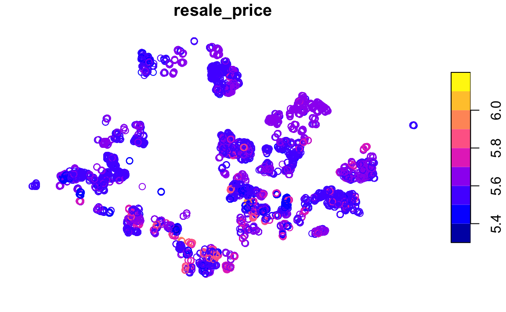
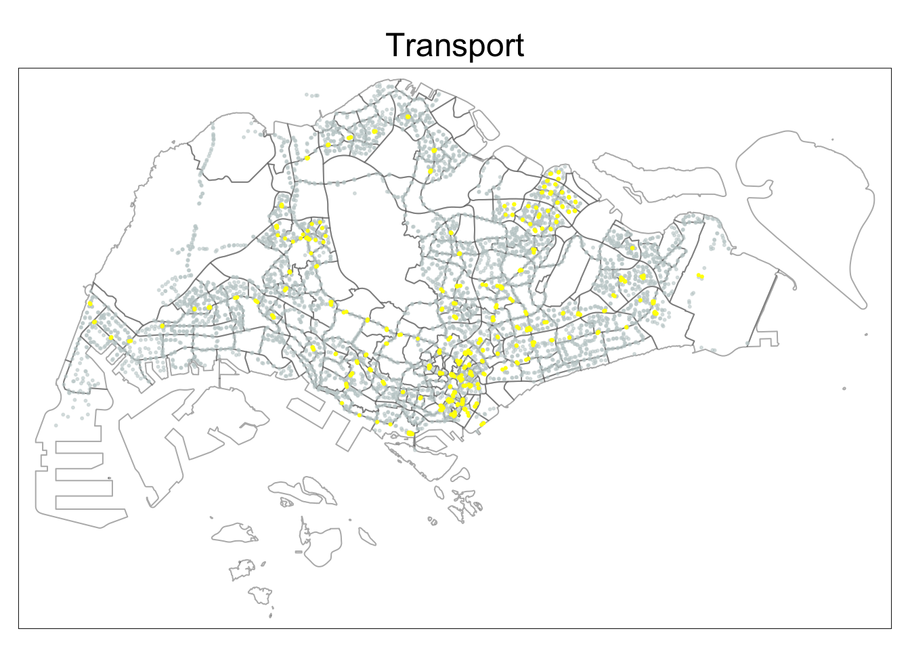

pacman::p_load(olsrr, corrplot, ggpubr, sf, spdep, GWmodel, tmap, tidyverse, gtsummary, sfdep, onemapsgapi, stringr, httr, rjson)Take Home Exercise 3
1.0 Overview
1.1 Background
HDB Pricing
1.2 Task
In this take-home exercise, you are tasked to predict HDB resale prices at the sub-market level (i.e. HDB 3-room, HDB 4-room and HDB 5-room) for the month of January and February 2023 in Singapore. The predictive models must be built by using by using conventional OLS method and GWR methods. You are also required to compare the performance of the conventional OLS method versus the geographical weighted methods.
2.0 Setup
2.1 Import Packages
sf - Used for handling geospatial data
sfdep - Used for functions not in spdep
tmap, maptools, kableExtra, plotly - Used for visualizing dataframes and plots
lubridate - Used for handling datetime
tidyr - Used for changing the shape and hierarchy of dataframe
readxl - to read excel data (.xlsx files)
tidyVerse - Used for data transformation and presentation
3.0 Data Wrangling
3.1 Datasets Used
| Geospatial |
| Type | Name |
|---|---|
| Aspatial | HDB Resale Data |
| Geospatial | Singapore Subzones (base layer) |
| Geospatial | Bus Stops |
| Geospatial | MRT Station Exits |
| Geospatial | Kindergartens |
| Geospatial | Childcare |
| Geospatial | Primary Schools |
| Geospatial | Sports Facilities |
| Geospatial | Parks |
| Geospatial | Gyms |
| Geospatial | Water Sites |
| Geospatial | Hawker Centers |
| Geospatial | Supermarkets |
| Geospatial | Eldercare |
| Geospatial | Waste Disposal |
| Geospatial | Active Cemeteries |
| Geospatial | Historic Sites |
3.2 Aspatial Data
3.2.1 Load Data
resale <- read_csv("data/aspatial/resale-flat-prices-based-on-registration-date-from-jan-2017-onwards.csv")glimpse(resale)
The dataset is based on the period of Jan 2017 to March 2023. It contains 11 columns with 149,071 rows.
3.2.2 Filter Data
The flat type has a high significance (p-value) of 2e-16 at 95% confidence level. This would impact the significance of all the other variables so the data is to be further split.
summary(aov(resale_price ~ flat_type, data = resale))
This exercise will use four bedroom flats only and for a shorter time period - Jan 01 2021 to Dec 31 2022 for train data and Jan 01 2023 to Feb 28 2023 for test data.
resale <- resale %>%
filter(flat_type == "4 ROOM") %>%
filter(month >= "2021-01" & month <= "2022-12" | month >= "2023-01" & month <= "2023-02")Code
c = 25501 #nrow(resale)
cat("The dataset now contains", c, "rows.")The dataset now contains 25501 rows.3.2.2 Clean Up Variables
3.2.2.1 Street Address
Extract full address with joint block and street name
resale <- rs_subset %>%
mutate(rs_subset, address = paste(block,street_name))3.2.2.2 Remaining Lease
Extract numeric value of remaining lease from text
Code
str_list <- str_split(resale$remaining_lease, " ")
c = 1 #index counter
for(i in str_list) {
year <- as.numeric(i[1])
month = 0
if(length(i) > 2) { #x years y months
month <- as.numeric(i[3])
}
resale$remaining_lease[c] <- (year + round(month/12, 2))
c = c + 1
}3.2.2.3 Floor Level
Convert storey_range from text to ordinal data (ranging 1 - 17)
Code
#get ordinal data of storey_range
storey_text <- unique(resale$storey_range)
storey_ordinal <- seq_along(storey_text)
#set label
resale$storey_num <- storey_ordinal[match(resale$storey_range, storey_text)]
levels(resale$storey_num) <- storey_text
#change column to numeric data type
resale<- resale |>
mutate(storey_num=as.numeric(storey_num))3.2.3 Get Latitude and Longitude
Extract latitude, longitude and postal code of all addresses and store into temporary data frame for further inspection
Code
#list of addresses
add_list <- sort(unique(resale$address))
#dataframe to store api data
postal_coords <- data.frame()
for (i in add_list) {
r <- GET('https://developers.onemap.sg/commonapi/search?',
query=list(searchVal=i,
returnGeom='Y',
getAddrDetails='Y'))
data <- fromJSON(rawToChar(r$content))
found <- data$found
res <- data$results
if (found > 0){
postal <- res[[1]]$POSTAL
lat <- res[[1]]$LATITUDE
lng <- res[[1]]$LONGITUDE
new_row <- data.frame(address= i, postal = postal, latitude = lat, longitude = lng)
}
else {
new_row <- data.frame(address= i, postal = NA, latitude = NA, longitude = NA)
}
postal_coords <- rbind(postal_coords, new_row)
}3.2.3.1 Check for missing values
postal_coords[(is.na(postal_coords$postal) | is.na(postal_coords$latitude) | is.na(postal_coords$longitude) | postal_coords$postal=="NIL"), ]
After looking up the addresses on Google Maps, these were postal codes found. The last address required further searching as its location is not confirmed on Google Maps.
| address | postal |
|---|---|
| 120 SIMEI ST 1 | 520120 |
| 213 BISHAN ST 23 | 570213 |
| 215 CHOA CHU KANG CTRL | 680215 |
| 263 BOON LAY DR | 640263 |
| 339 WOODLANDS AVE 1 | 730339 |
| 361 HOUGANG AVE 5 | 530361 |
| 386 BT BATOK WEST AVE 5 | 650386 |
| 548 SERANGOON NTH AVE 3 | 550548 |
| 634 CHOA CHU KANG NTH 6 | 680634 |
Append found postal codes to the postal coords data frame
Code
indices = c(370, 1283, 1305, 1750, 2545, 2695, 2767, 3993, 4429)
postal_codes = c("520120", "570213", "680215","640263", "730339", "530361", "650386", "550548", "680634")
for (i in 1:length(indices)) {
postal_coords$postal[indices[i]] <- postal_codes[i]
}Join into main apsatial data frame
rs_coords <- left_join(resale, postal_coords, by = c('address' = 'address'))Convert latitude and longitude into geometry points
rs_coords <- st_as_sf(rs_coords,
coords = c("longitude", "latitude"),
crs = 3414)3.2.3.2 Retain relevant fields
rs_coords <- subset(rs_coords, select = c(month, town, storey_num, floor_area_sqm, flat_model, remaining_lease, resale_price, address, postal))3.2.4 Write file to RDS
write_rds(rs_coords, "data/aspatial/rds/resale.rds")3.2.5 Read RDS file
resale <- read_rds("data/aspatial/rds/resale.rds")3.2.6 Visualise Data
plot(resale)
3.3 Geospatial Data
The geospatial data used is the base map layer of Singapore and locational factors. For ease of use, the factors will be grouped by category (transport, education, sports, amenities and others).
3.3.1 Load Data and Transform CRS
Store token for using onemap api
token <- "your token"mpsz <- st_read(dsn = "data/geospatial/base", layer="MP14_SUBZONE_WEB_PL") %>%
st_transform(crs = 3414)Reading layer `MP14_SUBZONE_WEB_PL' from data source
`/Users/shambhavigoenka/Desktop/School/Geo/IS415-GAA/take_home_ex/take_home_ex03/data/geospatial/base'
using driver `ESRI Shapefile'
Simple feature collection with 323 features and 15 fields
Geometry type: MULTIPOLYGON
Dimension: XY
Bounding box: xmin: 2667.538 ymin: 15748.72 xmax: 56396.44 ymax: 50256.33
Projected CRS: SVY21Bus Stop
busstop <- st_read(dsn = "data/geospatial/transport/BusStop", layer="BusStop") %>%
st_transform(crs = 3414) %>%
select(1)Reading layer `BusStop' from data source
`/Users/shambhavigoenka/Desktop/School/Geo/IS415-GAA/take_home_ex/take_home_ex03/data/geospatial/transport/BusStop'
using driver `ESRI Shapefile'
Simple feature collection with 5159 features and 3 fields
Geometry type: POINT
Dimension: XY
Bounding box: xmin: 3970.122 ymin: 26482.1 xmax: 48284.56 ymax: 52983.82
Projected CRS: SVY21MRT
Code
#extract MRT data and save as shapefile
mrt <- st_read(dsn= "data/geospatial/transport/MRT/lta-mrt-station-exit-kml.kml") |>
st_zm()
st_write(obj = mrt,
dsn = "data/geospatial/transport/MRT",
layer = "MRT",
driver = "ESRI Shapefile",
append = FALSE)#read shapefile
mrt <- st_read(dsn= "data/geospatial/transport/MRT", layer = "MRT") %>%
st_transform(crs = 3414) %>%
select(1)Reading layer `MRT' from data source
`/Users/shambhavigoenka/Desktop/School/Geo/IS415-GAA/take_home_ex/take_home_ex03/data/geospatial/transport/MRT'
using driver `ESRI Shapefile'
Simple feature collection with 474 features and 2 fields
Geometry type: POINT
Dimension: XY
Bounding box: xmin: 103.6368 ymin: 1.264972 xmax: 103.9893 ymax: 1.449157
Geodetic CRS: WGS 84Kindergartens
Code
#extract kindergarten data and save as shapefile
kindergartens<-get_theme(token,"kindergartens")
kindergartens <- st_as_sf(kindergartens, coords=c("Lng", "Lat"), crs=3414)
st_write(obj = kindergartens,
dsn = "data/geospatial/education/kindergartens",
layer = "kindergartens",
driver = "ESRI Shapefile")kindergartens <- st_read(dsn = "data/geospatial/education/kindergartens", layer = "kindergartens") %>%
select(1)Reading layer `kindergartens' from data source
`/Users/shambhavigoenka/Desktop/School/Geo/IS415-GAA/take_home_ex/take_home_ex03/data/geospatial/education/kindergartens'
using driver `ESRI Shapefile'
Simple feature collection with 448 features and 5 fields
Geometry type: POINT
Dimension: XY
Bounding box: xmin: 103.6887 ymin: 1.247759 xmax: 103.9717 ymax: 1.455452
Projected CRS: SVY21 / Singapore TMChildcare centers
Code
#extract childcare center data and save as shapefile
childcare<-get_theme(token,"childcare")
childcare <- st_as_sf(childcare, coords=c("Lng", "Lat"), crs=3414)
st_write(obj = childcare,
dsn = "data/geospatial/education/childcare",
layer = "childcare",
driver = "ESRI Shapefile")childcare <- st_read(dsn = "data/geospatial/education/childcare", layer = "childcare") %>%
select(1)Reading layer `childcare' from data source
`/Users/shambhavigoenka/Desktop/School/Geo/IS415-GAA/take_home_ex/take_home_ex03/data/geospatial/education/childcare'
using driver `ESRI Shapefile'
Simple feature collection with 1925 features and 5 fields
Geometry type: POINT
Dimension: XY
Bounding box: xmin: 103.6878 ymin: 1.247759 xmax: 103.9897 ymax: 1.462134
Projected CRS: SVY21 / Singapore TMPrimary school
Code
primary_schools <- read.csv("data/geospatial/education/primary_schools/general-information-of-schools.csv") |>
filter(mainlevel_code=="PRIMARY") |>
select(school_name, address, postal_code)
#dataframe to store api data
coords <- data.frame()
for (i in primary_schools$postal_code) {
r <- GET('https://developers.onemap.sg/commonapi/search?',
query=list(searchVal=i,
returnGeom='Y',
getAddrDetails='N'))
data <- fromJSON(rawToChar(r$content))
found <- data$found
res <- data$results
if (found > 0){
lat <- res[[1]]$LATITUDE
lng <- res[[1]]$LONGITUDE
new_row <- data.frame(postal = as.numeric(i), latitude = lat, longitude = lng)
}
else {
new_row <- data.frame(postal = as.numeric(i), latitude = NA, longitude = NA)
}
coords <- rbind(coords, new_row)
}
#There are 3 missing coordinate data for postal codes 88256, 99757 and 99840
#This is because the codes have 5 instead of 6 digits and need 0 padding
coords <- na.omit(coords)
for (i in c("088256", "099757", "099840")) {
r <- GET('https://developers.onemap.sg/commonapi/search?',
query=list(searchVal=i,
returnGeom='Y',
getAddrDetails='N'))
res <- fromJSON(rawToChar(r$content))$results
new_row <- data.frame(postal = as.numeric(i), latitude = res[[1]]$LATITUDE, longitude = res[[1]]$LONGITUDE)
coords <- rbind(coords, new_row)
}
#add coordinate data into dataframe
primary_schools <- left_join(primary_schools, coords, by = c('postal_code' = 'postal'))
#store as sf object
primary_schools <- st_as_sf(primary_schools, coords=c("longitude", "latitude"), crs=3414)
#save as shapefile
st_write(obj = primary_schools,
dsn = "data/geospatial/education/primary_schools",
layer = "primary_schools",
driver = "ESRI Shapefile")primary_schools <- st_read(dsn = "data/geospatial/education/primary_schools", layer = "primary_schools") %>%
select(1)Reading layer `primary_schools' from data source
`/Users/shambhavigoenka/Desktop/School/Geo/IS415-GAA/take_home_ex/take_home_ex03/data/geospatial/education/primary_schools'
using driver `ESRI Shapefile'
Simple feature collection with 183 features and 3 fields
Geometry type: POINT
Dimension: XY
Bounding box: xmin: 103.6878 ymin: 1.274958 xmax: 103.9628 ymax: 1.456608
Projected CRS: SVY21 / Singapore TMGood primary school
The top 10 schools have been selected from here. Although this is 2020 data, its ranking structure was more holistic as it was not solely based on GEP.
Code
school_list <- toupper(c("Nanyang Primary School", "Tao Nan School", "Catholic High School", "Nan Hua Primary School", "St. Hilda's Primary School", "Henry Park Primary School", "Anglo-Chinese School (Primary)", "Raffles Girls' Primary School", "Pei Hwa Presbyterian Primary School", "Chij St. Nicholas Girls' School"))
good_primary_schools <- primary_schools %>%
filter(schl_nm %in% school_list)
#There is a discrepency between the way Catholic High School and Chij St. Nicholas Girls' School are mentioned in the school list on the website but not in the list imported from onemap api. To simplify this, the next two best schools will be selected.
school_list <- toupper(c("Rosyth School", "Kong Hwa School"))
good_primary_schools <- rbind(good_primary_schools, primary_schools %>% filter(schl_nm %in% school_list))
#save as shapefile
st_write(obj = good_primary_schools,
dsn = "data/geospatial/education/good_primary_schools",
layer = "good_primary_schools",
driver = "ESRI Shapefile")good_primary_schools <- st_read(dsn = "data/geospatial/education/good_primary_schools", layer = "good_primary_schools") %>%
select(1)Reading layer `good_primary_schools' from data source
`/Users/shambhavigoenka/Desktop/School/Geo/IS415-GAA/take_home_ex/take_home_ex03/data/geospatial/education/good_primary_schools'
using driver `ESRI Shapefile'
Simple feature collection with 10 features and 3 fields
Geometry type: POINT
Dimension: XY
Bounding box: xmin: 103.7611 ymin: 1.305285 xmax: 103.937 ymax: 1.372891
Projected CRS: SVY21 / Singapore TMSports Facilities
Code
#extract sports facilities data and save as shapefile
sport_facilities <- get_theme(token,"sportsg_sport_facilities")
#Longitute column contains "longitute|latitude" which needs to be cleaned
sport_facilities <- sport_facilities %>%
mutate(Lng=str_extract(Lng, "\\d+\\.?\\d*")) %>%
select("NAME", "Lng", "Lat")
sport_facilities <- st_as_sf(sport_facilities, coords=c("Lng", "Lat"), crs=3414)
# creating a saved sf object in data file for easy reference
st_write(obj = sport_facilities,
dsn = "data/geospatial/sports/sport_facilities",
layer = "sport_facilities",
driver = "ESRI Shapefile")sport_facilities <- st_read(dsn = "data/geospatial/sports/sport_facilities", layer = "sport_facilities") %>%
select(1)Reading layer `sport_facilities' from data source
`/Users/shambhavigoenka/Desktop/School/Geo/IS415-GAA/take_home_ex/take_home_ex03/data/geospatial/sports/sport_facilities'
using driver `ESRI Shapefile'
Simple feature collection with 35 features and 1 field
Geometry type: POINT
Dimension: XY
Bounding box: xmin: 103.6937 ymin: 1.287668 xmax: 103.9524 ymax: 1.435755
Projected CRS: SVY21 / Singapore TMParks
Code
#extract park data and save as shapefile
parks <- st_read(dsn= "data/geospatial/sports/parks/parks.kml") |>
st_zm()
st_write(obj = parks,
dsn = "data/geospatial/sports/parks",
layer = "parks",
driver = "ESRI Shapefile",
append = FALSE)#read shapefile
parks <- st_read(dsn= "data/geospatial/sports/parks", layer = "parks") %>%
st_transform(crs = 3414) %>%
select(1)Reading layer `parks' from data source
`/Users/shambhavigoenka/Desktop/School/Geo/IS415-GAA/take_home_ex/take_home_ex03/data/geospatial/sports/parks'
using driver `ESRI Shapefile'
Simple feature collection with 421 features and 2 fields
Geometry type: POINT
Dimension: XY
Bounding box: xmin: 103.6929 ymin: 1.214491 xmax: 104.0538 ymax: 1.462094
Geodetic CRS: WGS 84Gyms
Code
#extract gym data and save as shapefile
gyms <- st_read(dsn= "data/geospatial/sports/gyms/gyms-sg-kml.kml") |>
st_zm()
st_write(obj = gyms,
dsn = "data/geospatial/sports/gyms",
layer = "gyms",
driver = "ESRI Shapefile",
append = FALSE)#read shapefile
gyms <- st_read(dsn= "data/geospatial/sports/gyms", layer = "gyms") %>%
st_transform(crs = 3414) %>%
select(1)Reading layer `gyms' from data source
`/Users/shambhavigoenka/Desktop/School/Geo/IS415-GAA/take_home_ex/take_home_ex03/data/geospatial/sports/gyms'
using driver `ESRI Shapefile'
Simple feature collection with 159 features and 2 fields
Geometry type: POINT
Dimension: XY
Bounding box: xmin: 103.6938 ymin: 1.262063 xmax: 103.9518 ymax: 1.435078
Geodetic CRS: WGS 84Water Sites
Code
#extract gym data and save as shapefile
watersites <- st_read(dsn= "data/geospatial/sports/watersites/abc-water-sites.kml") |>
st_zm()
st_write(obj = watersites,
dsn = "data/geospatial/sports/watersites",
layer = "watersites",
driver = "ESRI Shapefile",
append = FALSE)#read shapefile
watersites <- st_read(dsn= "data/geospatial/sports/watersites", layer = "watersites") %>%
st_transform(crs = 3414) %>%
select(1)Reading layer `watersites' from data source
`/Users/shambhavigoenka/Desktop/School/Geo/IS415-GAA/take_home_ex/take_home_ex03/data/geospatial/sports/watersites'
using driver `ESRI Shapefile'
Simple feature collection with 45 features and 2 fields
Geometry type: MULTIPOLYGON
Dimension: XY
Bounding box: xmin: 103.722 ymin: 1.286106 xmax: 103.9545 ymax: 1.448468
Geodetic CRS: WGS 84Hawker centers
Code
#extract gym data and save as shapefile
hawker_centers <- st_read(dsn= "data/geospatial/amenities/hawker_centers/hawker-centres-kml.kml") |>
st_zm()
st_write(obj = hawker_centers,
dsn = "data/geospatial/amenities/hawker_centers",
layer = "hawker_centers",
driver = "ESRI Shapefile",
append = FALSE)#read shapefile
hawker_centers <- st_read(dsn= "data/geospatial/amenities/hawker_centers", layer = "hawker_centers") %>%
st_transform(crs = 3414) %>%
select(1)Reading layer `hawker_centers' from data source
`/Users/shambhavigoenka/Desktop/School/Geo/IS415-GAA/take_home_ex/take_home_ex03/data/geospatial/amenities/hawker_centers'
using driver `ESRI Shapefile'
Simple feature collection with 125 features and 2 fields
Geometry type: POINT
Dimension: XY
Bounding box: xmin: 103.6974 ymin: 1.272716 xmax: 103.9882 ymax: 1.449217
Geodetic CRS: WGS 84Supermarkets
Code
#extract gym data and save as shapefile
supermarkets <- st_read(dsn= "data/geospatial/amenities/supermarkets/supermarkets-kml.kml") |>
st_zm()
st_write(obj = supermarkets,
dsn = "data/geospatial/amenities/supermarkets",
layer = "supermarkets",
driver = "ESRI Shapefile",
append = FALSE)#read shapefile
supermarkets <- st_read(dsn= "data/geospatial/amenities/supermarkets", layer = "supermarkets") %>%
st_transform(crs = 3414) %>%
select(1)Reading layer `supermarkets' from data source
`/Users/shambhavigoenka/Desktop/School/Geo/IS415-GAA/take_home_ex/take_home_ex03/data/geospatial/amenities/supermarkets'
using driver `ESRI Shapefile'
Simple feature collection with 526 features and 2 fields
Geometry type: POINT
Dimension: XY
Bounding box: xmin: 103.6258 ymin: 1.24715 xmax: 104.0036 ymax: 1.461526
Geodetic CRS: WGS 84Eldercare
Code
#extract eldercare center data and save as shapefile
eldercare <-get_theme(token,"eldercare")
eldercare <- st_as_sf(eldercare, coords=c("Lng", "Lat"), crs=3414)
st_write(obj = eldercare,
dsn = "data/geospatial/amenities/eldercare",
layer = "eldercare",
driver = "ESRI Shapefile")eldercare <- st_read(dsn = "data/geospatial/amenities/eldercare", layer = "eldercare") %>%
select(1)Reading layer `eldercare' from data source
`/Users/shambhavigoenka/Desktop/School/Geo/IS415-GAA/take_home_ex/take_home_ex03/data/geospatial/amenities/eldercare'
using driver `ESRI Shapefile'
Simple feature collection with 133 features and 4 fields
Geometry type: POINT
Dimension: XY
Bounding box: xmin: 103.7119 ymin: 1.271472 xmax: 103.9561 ymax: 1.439561
Projected CRS: SVY21 / Singapore TMCBD Area
As the Downtown Core is also referred to as the Central Business District (CBD), the coordinates of Downtown Core shall be used. Based on the information here, the latitude is 1.287953 and longitude is 103.851784
cbd <- st_as_sf(data.frame(name = c("CBD Area"), latitude = c(1.287953), longitude = c(103.851784)),
coords = c("longitude", "latitude"),
crs = 3414)Waste Disposal sites
Code
#extract waste disposal data and save as shapefile
waste_disposal <- st_read(dsn= "data/geospatial/others/waste_disposal/waste-treatment-kml.kml") |>
st_zm()
st_write(obj = supermarkets,
dsn = "data/geospatial/others/waste_disposal",
layer = "waste_disposal",
driver = "ESRI Shapefile",
append = FALSE)#read shapefile
waste_disposal <- st_read(dsn= "data/geospatial/others/waste_disposal", layer = "waste_disposal") %>%
st_transform(crs = 3414) %>%
select(1)Reading layer `waste_disposal' from data source
`/Users/shambhavigoenka/Desktop/School/Geo/IS415-GAA/take_home_ex/take_home_ex03/data/geospatial/others/waste_disposal'
using driver `ESRI Shapefile'
Simple feature collection with 526 features and 2 fields
Geometry type: POINT
Dimension: XY
Bounding box: xmin: 4901.188 ymin: 25529.08 xmax: 46948.22 ymax: 49233.6
Projected CRS: SVY21 / Singapore TMActive Cemeteries
Code
#extract active cemeteries data and save as shapefile
cemeteries <- st_read(dsn= "data/geospatial/others/active_cemeteries/active-cemeteries-kml.kml") |>
st_zm()
st_write(obj = cemeteries,
dsn = "data/geospatial/others/active_cemeteries",
layer = "cemeteries",
driver = "ESRI Shapefile",
append = FALSE)#read shapefile
cemeteries <- st_read(dsn= "data/geospatial/others/active_cemeteries", layer = "cemeteries") %>%
st_transform(crs = 3414) %>%
select(1)Reading layer `cemeteries' from data source
`/Users/shambhavigoenka/Desktop/School/Geo/IS415-GAA/take_home_ex/take_home_ex03/data/geospatial/others/active_cemeteries'
using driver `ESRI Shapefile'
Simple feature collection with 10 features and 2 fields
Geometry type: POINT
Dimension: XY
Bounding box: xmin: 103.6859 ymin: 1.3694 xmax: 103.7571 ymax: 1.41948
Geodetic CRS: WGS 84Historic Sites
Code
#extract historic sites data and save as shapefile
historic_sites <- st_read(dsn= "data/geospatial/others/historic_sites/historic-sites-kml.kml") |>
st_zm()
st_write(obj = historic_sites,
dsn = "data/geospatial/others/historic_sites",
layer = "historic_sites",
driver = "ESRI Shapefile",
append = FALSE)#read shapefile
historic_sites <- st_read(dsn= "data/geospatial/others/historic_sites", layer = "historic_sites") %>%
st_transform(crs = 3414) %>%
select(1)Reading layer `historic_sites' from data source
`/Users/shambhavigoenka/Desktop/School/Geo/IS415-GAA/take_home_ex/take_home_ex03/data/geospatial/others/historic_sites'
using driver `ESRI Shapefile'
Simple feature collection with 99 features and 2 fields
Geometry type: POINT
Dimension: XY
Bounding box: xmin: 103.6993 ymin: 1.252663 xmax: 103.9906 ymax: 1.448855
Geodetic CRS: WGS 843.3.2 Check for Invalid Geometries
3.3.2.1 Base layer
Code
cat("There are", length(which(st_is_valid(mpsz) == FALSE)) , "invalid geometries in the base layer. This shall be resolved in the following step.")There are 9 invalid geometries in the base layer. This shall be resolved in the following step.mpsz <- st_make_valid(mpsz)Code
cat("There are now", length(which(st_is_valid(mpsz) == FALSE)) , "invalid geometries in the base layer.")There are now 0 invalid geometries in the base layer.3.3.2.2 Geospatial Factors
Code
df_list <- c("busstop", "cbd", "cemeteries", "childcare", "eldercare", "good_primary_schools", "gyms", "hawker_centers", "historic_sites", "kindergartens", "mrt", "parks", "primary_schools", "sport_facilities", "supermarkets", "waste_disposal", "watersites")
c = 0
for(i in df_list) {
c = c + length(which(st_is_valid(eval(parse(text = i))) == FALSE))
}
cat("There are", c , "invalid geometries in the geospatial factors")There are 0 invalid geometries in the geospatial factors3.3.3 Check for Missing Values
3.3.3.1 Base layer
Code
cat("There are", sum(is.na(mpsz)) , "missing values in the base layer.")There are 0 missing values in the base layer.3.3.3.2 Geospatial Factors
Code
c = 0
for(i in df_list) {
c = c + sum(is.na(mpsz))
}
cat("There are", c , "missing values in the geospatial factors.")There are 0 missing values in the geospatial factors.3.4 Visualise Data
Code
tm_shape(mpsz) +
tm_borders(alpha = 0.5) +
tmap_options(check.and.fix = TRUE) +
tm_shape(busstop) +
tm_dots(col="azure3", alpha=0.5) +
tm_shape(mrt) +
tm_dots(col="yellow", alpha=1)+
tm_layout(main.title = "Transport",
main.title.position = "center")
Code
tm_shape(mpsz) +
tm_borders(alpha = 0.5) +
tmap_options(check.and.fix = TRUE) +
tm_shape(childcare) +
tm_dots(col="linen", alpha=0.2) +
tm_shape(primary_schools) +
tm_dots(col="lightskyblue3", alpha=0.5)+
tm_shape(kindergartens) +
tm_dots(col="lightslateblue", alpha=0.5) +
tm_shape(good_primary_schools) +
tm_dots(col="red", alpha=1)+
tm_layout(main.title = "Education",
main.title.position = "center")Code
tm_shape(mpsz) +
tm_borders(alpha = 0.5) +
tmap_options(check.and.fix = TRUE) +
tm_shape(sport_facilities) +
tm_dots(col="violet", alpha=1) +
tm_shape(parks) +
tm_dots(col="mediumseagreen", alpha=0.5) +
tm_shape(gyms) +
tm_dots(col="azure3", alpha=0.7) +
tm_shape(watersites) +
tm_dots(col="skyblue3", alpha=1) +
tm_layout(main.title = "Sports",
main.title.position = "center")Code
tm_shape(mpsz) +
tm_borders(alpha = 0.5) +
tmap_options(check.and.fix = TRUE) +
tm_shape(hawker_centers) +
tm_dots(col="firebrick3", alpha=1) +
tm_shape(supermarkets) +
tm_dots(col="olivedrab", alpha=0.5) +
tm_shape(eldercare) +
tm_dots(col="tan", alpha=0.7) +
tm_layout(main.title = "Amenities",
main.title.position = "center")Code
tm_shape(mpsz) +
tm_borders(alpha = 0.5) +
tmap_options(check.and.fix = TRUE) +
tm_shape(cbd) +
tm_dots(col="cadetblue3", alpha=1) +
tm_shape(waste_disposal) +
tm_dots(col="coral3", alpha=0.5) +
tm_shape(cemeteries) +
tm_dots(col="gray20", alpha=1) +
tm_shape(historic_sites) +
tm_dots(col="darkseagreen2", alpha=1) +
tm_layout(main.title = "Others",
main.title.position = "center")